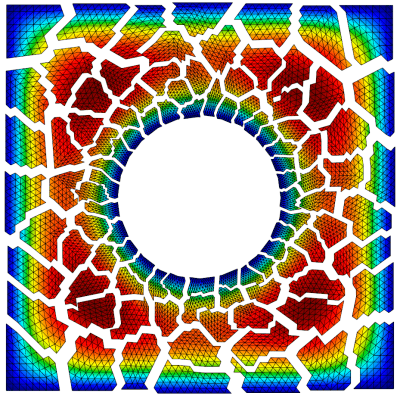

Gallery
This page collects screenshots from various simulations based on MFEM. Additional images can be found in the GLVis gallery.

A version of the MFEM logo demonstrating curvilinear elements, adaptive mesh refinement and (idealized) parallel partitioning. Visualization with GLVis.
{kind=link}
Incompressible Taylor-Green vortex simulation with high-order finite elements. Visualization with ParaView.
{kind=link}
Fibers generated by LDRB approach based on 4 Laplacian solves in the Cardioid project.
{kind=link}
Solution of a Maxwell problem on a Klein bottle. Mesh generated with the klein-bottle miniapp. Solution with Example 3.
{kind=link}
Comparisons of equipotential surfaces and force lines from Maxwell's Treatise on Electricity and Magnetism with results from MFEM's Volta miniapp.

Level surfaces in the interior of the solution from Example 1 on escher.mesh. Visualization with GLVis.

3D Arbitrary Lagrangian-Eulerian (ALE) simulation of a shock-triple point interaction with Q2-Q1 elements in the MFEM-based BLAST shock hydrodynamics code. Volume visualization with VisIt.
{kind=link}
Modeling elastic-plastic flow in the 3D Taylor high-velocity impact problem using 4th order mixed elements in the MFEM-based BLAST shock hydrodynamics code. Visualization with VisIt.

Poisson problem on a "Breather" surface. Mesh generated with the Mesh Explorer miniapp. Solution with Example 1.

Triple point shock interaction on 4 elements of order 12. Note the element curvature and the high variation of the field inside the lower right element.

Streamlines of the magnetic field from a parallel computation of the magnetostatic interaction of two magnetic orbs. Visualization with VTK.

Test of the propagation of a spherical shock wave through a random non-conforming mesh in the MFEM-based BLAST shock hydrodynamics code. Visualization with GLVis.
{kind=link}
Slice image of the high harmonic fast wave propagation in the NSTX-U magnetic fusion device. Computed using MFEM's 4th order H(curl) elements by the RF-SciDAC project.

An electromagnetic eigenmode of a star-shaped domain computed with 3rd order finite elements computed with Example 13.
{kind=link}
High-order multi-material inertial confinement fusion (ICF)-like implosion in the MFEM-based BLAST shock hydrodynamics code. Visualization with VisIt.

Two-region AMR mesh generated by the Shaper miniapp from successive adaptation to the outlines of Australia.

Radiating Kevin-Helmholtz modeled with the MFEM-based BLAST shock hydrodynamics code. Volume visualization with VisIt.

Simulation-driven r-adaptivity using TMOP for a three-material high-velocity gas impact in BLAST. Visualization with VisIt. Click here for a movie.
{kind=link}
The Shaper miniapp applied to a multi-material input functions described by the iterates of the Mandelbrot set. Visualization with GLVis.

Topology optimization of a drone body using LLNL's LiDO project, based on MFEM.
{kind=link}
Electric field induced by an MRI gradient coil in a human body. Simulation by the Magnetic Resonance Physics and Instrumentation Group at Harvard Medical School.

Multi-mode Rayleigh-Taylor instability simulation using 4th order mixed elements in the MFEM-based BLAST shock hydrodynamics code. Visualization with VisIt.
{kind=link}
Purely Lagrangian Rayleigh-Taylor instability simulation using 8th order mixed elements in the MFEM-based BLAST shock hydrodynamics code. Visualization with GLVis.

Anisotropic refinement in a 2D shock-like AMR test problem. Visualization with GLVis.

Parallel version of Example 1 on 100 processors with a relatively coarse version of square-disc.mesh. Visualization with GLVis.

Anisotropic refinement in a 3D version of the AMR test. Portion of the spherical domain is cut away in GLVis.

Structural topology optimization with MFEM in LLNL's Center for Design and Optimization.

Test of the anisotropic refinement feature on a random mesh. A slightly modified version of Example 1. Visualization with GLVis.

Level lines in a cutting plane of the solution from the parallel version of Example 1 on 64 processors with fichera.mesh. Visualization with GLVis.
{kind=link}
Cut image of the solution from Example 1 on a sharply twisted, high order toroidal mesh. The mesh was generated with the toroid miniapp.